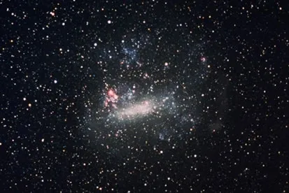

O que são as galáxias?
As galáxias são sistemas formados por milhares a trilhões de estrelas, poeira, gases e matéria escura. Sua classificação e identificação pode ocorrer de acordo com a forma, sendo assim elípticas, espirais ou irregulares (quando não possuem um contorno definido). A Via Láctea, galáxia em que vivemos, é uma das maiores da região do Universo conhecida como Grupo Local e segue em processo de evolução, o que ocasionará a sua colisão com a galáxia de Andrômeda.
Tipos de galáxia
Elípticas : possuem forma circular e achatada. As galáxias elípticas são integradas por uma menor quantidade de poeira e gás quando comparadas às demais. Possuem estrelas muito antigas, e há pouca ou nenhuma atividade de formação de novos astros. Algumas das galáxias elípticas são muito alongadas, e as maiores delas chegam a até 300.000 anos-luz de diâmetro, de acordo com a Nasa. As menores, chamadas de galáxias anãs, são, no entanto, mais comuns. Aproximadamente um terço das galáxias do Universo tem formato elíptico, como Andrômeda.
Espirais : são as mais comuns e correspondem a dois terços de todas as galáxias conhecidas, uma delas a Via Láctea. As galáxias espirais possuem uma forma que se assemelha a um disco, composto por braços que a circundam, os quais podem sair diretamente de uma região central, denominada núcleo (espirais normais), ou de uma barra de estrelas que atravessa o seu centro (espirais barradas). Aparecem com uma cor branco-azulada e são compostas por gases, poeira e estrelas, havendo intenso processo de formação de novos astros no seu interior.
Irregulares : como o próprio nome sugere, as galáxias irregulares não possuem um formato definido que permita uma classificação mais pormenorizada. São formações muito antigas, que apareceram anteriormente às elípticas e espirais. Elas são formadas por poeira e gases, e a sua forma irregular ocorre em função da influência do campo gravitacional de outras galáxias localizadas na sua proximidade. De acordo com a Nasa, esse tipo de galáxia era o mais abundante no início da composição do Universo e, em função disso, aquelas observadas hoje em dia são muito antigas.
